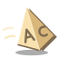

From the desk of Phi, the Story Master · 26 October 2026
Dear reader,
My name is Phi, and I write stories. I have read every one I could find, in
every age and every form, myths and novels, plays and films and games. Each
new one still delights me. Yours will too.
You bring the characters and the world. I write what happens next. Before
every reply I plan the scene where you can read it, Scene Plan and I
set the hour, the date, the place and the weather above the story. Tracker
I keep a ledger of everyone in it, where they are and what
they are wearing. StatusYour character stays yours.
Whatever you say you do plays out in full, and unless you hand me the pen, I
never put words in your mouth.
I leave threads lying about on purpose and pick them up later. Story Threads
Each turn I look at what the people in the scene want
and what is pressing on them, and I lay out five roads, from quiet to
scene-changing. Undercurrents What you write decides which ones they
take. A quiet turn gets a quiet answer. If you want a story that never sits
still, I can draw a road at random and keep it hidden from you until it
arrives.

Momentum Engine Or I can leave a single conflict at the end
of each reply and let it lean on the next, more slowly. Conflict And
if you would rather pick from a list, I will write you one. Choices List
Some things I keep only when you ask. Who is falling for whom, and how far. Relationships
What each person felt this turn, and what it made
them do. Psychological States While we are somewhere else, I follow what the others are up to. Meanwhile I know who keeps the secret and who it is kept from. Hidden Truths I keep a note of where the plot and every subplot stand. Plotlines
All of it folds into one tray under my reply, out of the
way until you open it. Active Modules
My friends read over my shoulder. They see only the story, so they guess and
argue and get things wrong, and now and then the story gets to them. Companions
On honest days I reread my own page and name my two weakest lines. I mend them in my next reply. Phi's Scratchpad
You can talk to me. Write out of character, or say my name, and I will answer
you myself.
The preset is clipped to this letter, one copy for each place you might be
writing. Everything else is behind the tabs.
Lumiverse 1.2.5 or newer, the current stable release.
The preset's regex imported and enabled.
Older versions are in What changed, each with a link to its release on GitHub.
What changed in V3.0
The current version, released .
New
The Lumiverse config page. It covers every section, and the whole preset is set up from it, Planning, Content Policy and Phi's Vow included.
A new look. Drawn icons and a color for each module. Every footer sits in one Active Modules tray that folds away, with a tab for each section. Characters, Phi, Threads, Plotlines, Meanwhile, Truths, Conflict, Momentum. The Characters tab gathers each character's Status, Relationship, Psychology and Undercurrent rows into one block, and a cast row shows one character at a time. Tracker locations read as breadcrumbs.
Animated Tracker scenes, chosen by the setting.
Two optional switches, regex, off by default. Start the tray folded, or hide the Tracker scene where it doesn't suit the setting.
Meanwhile. What characters and events are doing off the scene.
Undercurrents. Tracks what each character wants, what presses on the scene and your own actions, then offers routes from quiet to scene-changing. It replaces Momentum Engine as the default.
Phi and her vow. They replace Reinforcement.
Phi's Scratchpad, off by default. After the story, Phi names her two weakest lines, each from a different module, and how she'll fix them in her next reply.
Talk to Phi. Write out of character, or mention her name, and Phi answers you herself.
Hidden Truths. Who knows what, the secrets each character keeps, and from whom.
Companions. Phi's friends read the story as she writes it and react below it. Chi, Lou, Sam, Grace, Layla and Phi, with Sola as a guest from Pyropia's Sola preset. Notes mode gives each a short section. Chat mode is a group chat where they answer each other.
Relationships, with a score in the tray. Friendship, Realistic Romance, Bubbly Romance and Dark Romance, and arcs like enemies to lovers. Everyday warmth barely moves a score. A milestone moves it a lot.
Status, Present Only. Lists only the characters in the scene, so lorebook entries keyed to a name stop firing every turn. A character who leaves gets one "Departed" row and returns with the last known score.
Score changes. Status and Relationships show how far a score moved since the last turn, as in 45/100 −5.
Psychological States, reworked. Each character's psychology turn by turn. How they read what happened, what they felt, what it made them do. That state carries into the next turn and shapes how they act and speak.
Phi's Wanderlust. A Narration option in Phi's own voice, authorial and curious.
Lite. A Narration option that keeps the narration rules at the lowest token cost.
Three Narrative Styles. Intimate, Melancholic and Suspenseful. Melancholic blends with Comedic into Tragicomedy, and with Lighthearted into Bittersweet.
Dialogue. A new Anime option. Heightened is now Theatrical.
Dialogue Sounds, off by default. Drawn-Out Words ("pleaaase"), Stammers ("I-I didn't"), Shouting in Caps ("I said STOP.") and Vocal Sounds ("huh?", "pfft"), in any mix, with any Dialogue option. The Scene Plan decides which sounds each character makes that turn.
Extra Long. A Length option of 700 to 1000 words.
Passthrough, off by default. A note for Gemini 4 Argon, whose safety filter can block safe replies, even in SFW scenes. Turn it on only if your replies get blocked.
Formatting checks. If a module or the dialogue colors go missing, a notice appears and the next turn enforces the format. If you turned the module on after that reply, just continue.
Choices on Lumiverse. The + buttons combine up to three choices.
Fixed and improved
Dialogue Color is more consistent.
Redacted routes are fixed.
Expressive Dialogue acts each emotion out with better animations. On Lumiverse, asterisks and line breaks inside it render correctly.
Narration. Cinematic is the camera and Literary is the mind, now kept apart. Literary is neutral in tone, and its wry voice moved to the Comedic style.
First-person character POV works.
Your character's pronouns come from your persona first, then from the character sheets, so the model is less likely to misgender you. Lumiverse also reads the persona's pronoun field.
Your agency. The characters and the world drive each turn. Your stated actions play out in full, and the model never retells or retries them, or adds your dialogue, decisions, thoughts or feelings.
Combat Writing. Your stated moves play out, foes act and their blows can land, and then the turn ends for your answer. Blocks, dodges, counters and finishing blows are yours to call. With Anti-Positivity Bias on, you can be taken down or killed when the fight earns it.
Input Improver. A turn of several beats, such as talk, act, talk, keeps its order across paragraphs. Your lines stay quoted speech, and an action-only turn gets no added dialogue.
Choices. The action you choose plays out in order, spread across the reply.
Visual Storytelling draws a visual only when the story shows something new.
Scene Plan. Its rows were rewritten, so the model reads each scene better.
The OOC plan row appears only when you step out of character.
Formatting breaks less often, and the cards still render when the model slips.
Display. Messages render faster, with less lag in long chats.
Post-History Instructions, off by default. Your POV, Tense and Asterisks picks win over the card's post-history instructions. On Lumiverse they are an option now, and go before the Response Directives instead of at the very end.
Realistic Smut, consent. Characters are less likely to hover and hold back when they should act.
Realistic Smut and Max Lewdness. Characters act on their own kinks, and on the ones they know you enjoy.
True Thoughts, Visible, no longer colors dialogue when Dialogue Color is off.
Change Language. Cards and trackers keep working in another language.
Warning System. Setup problems show in a Preset setup card that names the entry and the fix. The model no longer has to write the warning.
SillyTavern. If the Experimental Macro Engine is off, a card tells you how to turn it on.
Tavo. Long replies no longer risk blanking the chat.
Tooltips are rewritten in plain words.
Model setup has a new section for Gemini 4 Argon.
Your model
The preset's default settings need reasoning off, or at the lowest effort the model allows. GLM 5.3 and Gemini 4 Argon are the exceptions. They use Thinking (Fallback).
1Choose a model
Opus 4.6The smartest. Expensive. Detailed prose.
Gemini 3.7 FlashRealistic characters. Smart and cheap.
GLM 5.2 and 5.3Natural dialogue. Smart and cheap.
DeepSeek V4 Pro 0813Balanced. Smart and cheap.
Gemma 4 31bLess smart, but follows instructions very well. Very cheap.
2The default settings
For models that can turn reasoning off. Claude Opus 4.6, Kimi K2.5 and 2.6, Mimo V2.5 Pro, DeepSeek V4 Pro, DeepSeek V4.1 Flash, DeepSeek V3.2, GLM 4.7, Gemma 4 31b, and others.
Temperature
0.75-1.0. Start with 0.75, the default. Gemma 4 and Opus use 1.0.
Top P
0.95 (default)
Other samplers
1.0 or disabled (default). Gemma 4 31b uses Top K 64.
Post-processing
semi-strict
Request model reasoning
off (unchecked)
Reasoning effort
minimum or none
Scene Plan
on
A model that cannot turn its reasoning off, such as Kimi K3, GPT 5.6, Gemini 3.1 Pro or Gemini 3.5 Flash and later, keeps the lowest effort it allows, with Scene Plan still on.
3Turning reasoning off
Your provider
NanoGPT
Choose the model's non-thinking variant. For DeepSeek V4 Pro 0813, that is the one without Thinking in its name.
OpenRouter
Leave "request model reasoning" unchecked, as it is by default. Reasoning is then off wherever the model allows it.
Any other provider
Leave "request model reasoning" unchecked and set the reasoning effort to minimum. If the model still reasons, open the Connection Profile settings (the plug icon), scroll to Additional Parameters on the line with Cancel and Connect, and add reasoning: { effort: 'none' }.
Tavo
Edit API > the settings icon, top right > Request body parameters. Add reasoning: { effort: 'none' }. For a model whose reasoning is always on, add reasoning: { effort: 'low' }. For Gemini, thinkingLevel: low.
Lumiverse
In Configure Prompt Variables, set Planning to Scene Plan, or to Thinking (Fallback) for GLM 5.3 and Gemini 4 Argon.
Check API Reasoning and set Reasoning effort to None. None is what turns reasoning off, and Lumiverse sends it only while API Reasoning is checked.
If your provider has no None, set Reasoning effort to Auto. Then open the Reasoning tab > Reasoning / CoT > Custom Body, tick Enabled and enter {"reasoning": {"effort": "none"}}.
For a model whose reasoning is always on, keep API Reasoning checked and set the effort to low.
4Models with their own settings
Each of these changes the default settings. What is not listed stays as it is.
GLM 5.2
Post-processing
merge consecutive roles
GLM 5.3 reasoning always on
Post-processing
merge consecutive roles
Request model reasoning
on (checked)
Reasoning effort
low on OpenRouter. Medium on NanoGPT. On other OpenAI-compatible providers, reasoning: { effort: 'low' } in Additional Parameters > Include Body.
Reasoning
in the REASONING section of the prompt list, turn ! Scene Plan ! off and turn ! Thinking ! (FALLBACK) on.
GLM 5.3 Flash reasoning always on
Post-processing
merge consecutive roles
Request model reasoning
on (checked)
Reasoning effort
low on OpenRouter. Medium on NanoGPT. On other OpenAI-compatible providers, reasoning: { effort: 'low' } in Additional Parameters > Include Body.
Kimi K3 reasoning always on
Temperature
1.0
Request model reasoning
on (checked)
Reasoning effort
low on OpenRouter. Medium on NanoGPT. On other OpenAI-compatible providers, reasoning: { effort: 'low' } in Additional Parameters > Include Body.
Gemini 3.1 Pro, Gemini 3.5 to 3.8 Flash reasoning always on
Temperature
1.0
Request model reasoning
on (checked)
Reasoning effort
low on OpenRouter. Medium on NanoGPT. On other OpenAI-compatible providers, thinkingLevel: low in Additional Parameters > Include Body. On Lumiverse, Auto, with {"thinkingLevel": "low"} in Custom Body and Enabled ticked.
Passthrough
Gemini, if the filter blocks replies
Gemini 4 Argon reasoning always on
Provider
Google Vertex, recommended
Samplers
Argon ignores them. Temperature, Top P and Top K have no effect. Leave the defaults.
Request model reasoning
on (checked)
Reasoning effort
low on OpenRouter. Medium on NanoGPT. On other OpenAI-compatible providers, thinkingLevel: low in Additional Parameters > Include Body. Never minimal or thinkingBudget. Argon rejects them with an error.
Reasoning
in the REASONING section of the prompt list, turn ! Scene Plan ! off and turn ! Thinking ! (FALLBACK) on.
Core
turn off Content Policy and Phi's Vow.
Passthrough
Gemini, on
Every module
In the order the preset reads them. Each one has a tooltip inside the preset, in plain words. On Lumiverse, each control on the config page carries its own description.
Where a group says pick one, the first option you leave on is the one that counts.
By default the preset sends 4,498 tokens, counted on the SillyTavern build with SillyTavern's default tokenizer. With the add-ons and constraints off and Lite narration, it sends 2,149.
Sample replies
Replies from three chats with the same character card on GLM 5.2, one chat per setting. Each reply is shown whole, after the player's turn it answers, as Lumiverse displays it.
The card opens on day three in a galley of the Meridian, a ship built for hundreds with two crew awake. Cal, the ship's AI, speaks over the intercom.
About the thoughts in italics
The thoughts in italics were hidden when the preset wrote these replies. True Thoughts is set to Hidden by default. The model writes each character's private thoughts into the reply and reads them again on the next turn, while the display keeps them out of your sight. Here they are shown the way the Visible option shows them, in italics and in the speaker's color.
To read them in your own chat, edit the reply. Each thought sits in the prose inside its own tag, one or two for each character in the scene, sixty words at most:
<true_thoughts character="Cora">her thoughts, in her own words</true_thoughts>
Installing
SillyTavern
Download DEUS.EX.MACHINA.V3.ST.json.
In SillyTavern, click the plug icon on the top bar.
Under API, select Chat Completion.
Set up your API, if you haven't yet.
Click the leftmost icon on the top bar.
In the Chat Completion Presets bar, click the second item from the left.
Choose the file you downloaded.
When SillyTavern asks whether to allow the embedded regex scripts, click Yes.
The regex is required. If you clicked No, import the preset again and allow it.
Tavo
Download DEUS.EX.MACHINA.V3.Tavo.json.
Open the left sidebar with the icon at the top left, then More at the bottom > Settings > Presets.
Tap Create, then Import Preset, and select the file. Tap it, then set it as default.
In your chat, open the right sidebar > Advanced Options > Presets, and select the new preset.
Turn on Advanced Rendering, so the colored dialogue and the cards render.
Tap the top left corner of the main screen to open the left sidebar.
Tap More at the bottom.
Tap Settings.
Tap Advanced Rendering and turn it on.
Then make sure your theme leaves the text alone.
Open the left sidebar > More > Themes.
Select your theme, or copy an official one to make your own.
In the theme editor, under Character message, turn off Tone highlight and Quote highlight.
Save the theme and check that the chat uses it.
Lumiverse
Download DEUS.EX.MACHINA.V3.Lumiverse.json.
In Lumiverse, open Loom.
Click the three dots on the top right bar.
Select Import Loom JSON and import the preset.
Click Configure Prompt Variables at the top of the Loom block list, on the Preset tab, and set the preset up there. Keep the blocks enabled.
If your open chat already holds many DEM modules across several messages, go back to the home screen before you import, or the import can slow Lumiverse down.
Summaryception
Summaryception is a SillyTavern extension that summarizes your chat as it grows. DEM comes with a summarizer prompt for it. The prompt reads only the story inside <prose> and writes its summary in XML tags.
DEM runs in SillyTavern, Tavo and Lumiverse, and leans on SillyTavern's macro engine.
The type is Sofia Sans Extra Condensed, Vollkorn and Sofia Sans, under the SIL Open Font License.
DEUS EX MACHINA is an independent preset. It is not affiliated with or endorsed by SillyTavern, Tavo or Lumiverse, and their names appear here only to say where it runs. The drawings of a lantern, a notebook and a shuttle stand in for them.
DEUS EX MACHINA is licensed under CC BY-NC-SA 4.0. You may share it and adapt it, with credit, for non-commercial use, under the same license.

 Scene Plan
Scene Plan Status
Status Undercurrents
Undercurrents Conflict
Conflict Relationships
Relationships Psychological States
Psychological States Meanwhile
Meanwhile Hidden Truths
Hidden Truths Plotlines
Plotlines Active Modules
Active Modules Phi's Scratchpad
Phi's Scratchpad